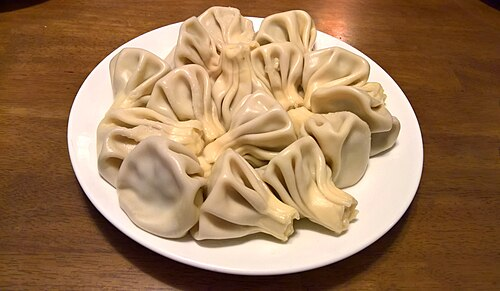

აჭარული ხაჭარული

აჭარული ხაჭაჭაპური — ეს არის ერთ-ერთი ყველაზე ცნობილი და პოპულარული ქართული კერძი, რომელიც აჭარის რეგიონიდან მოდის. იგი გამოირჩევა თავისი უნიკალური ფორმითა და გემოთი.
რეცეპტი
ფქვილი — 500 გრამი თბილი წყალი — 200 მლ რძე — 100 მლ შაქარი — 1 ჩ/კ მარილი — 1 ჩ/კ საფუარი (მშრალი) — 1 ჩ/კ მცენარეული ზეთი — 2 ს.კ
ცომის მომზადების წესი
ცომის მოზელა:დაამატეთ რძე, მარილი, ზეთი და ფქვილი. მოზილეთ რბილი ცომი და დააფარეთ, რომ ამოვიდეს (დაახლოებით 1 საათი). შიგთავსის მომზადება:
ხინკალი
ხინკალი — ერთ-ერთი ყველაზე საყვარელი და ცნობილი ქართული კერძია, განსაკუთრებული თავისი ფორმით, შიგთავსით და ჭამის წესით.
რეცწპტი
ცომისთვის: ფქვილი — 500 გრამი წყალი (ცივი) — 250 მლ მარილი — 1 ჩ/კ
მომზადების წესი ცომიათვის
ფქვილში ჩაყარე მარილი, ნელ-ნელა დაუმატე წყალი და მოზილე მყარ, ელასტიური ცომი. დააფარე ტილო და გააჩერე 30 წუთით "დასვენებისთვის".